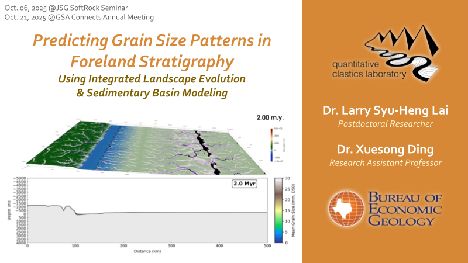

Demo slides

Larry Lai - Foreland grain size demo.pptx
Built atop the goSPL platform, this project aims to establish a novel source-to-sink modeling framework to enhance our understanding and predictability of the stratigraphic architecture and facies patterns developed in the deep-time sedimentary basin in response to allogenic controls, including tectonics, climate change, bedrock variability, and source-mountain landscape evolution. Details to be updated. Please see the demo slides linked above.
Next research topic Crustal recycling at an active arc-continent collision suture Studying the development of sedimentary basins, the origin of mélange, and inferred crustal deformation history at the active collisional suture zone of eastern Taiwan.